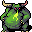
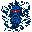

地獄の従者 Infernal Servant
英語版 CrawlWiki の記事「Infernal Servant」(0.34 向け、2026-05-29 版)の翻訳です。原文の著者は編集履歴をご覧ください。
このページはモンスターの呪文についての記事だ。マクレブの能力についてはマクレブ#授かる能力を参照。
| 上位の悪魔を一体召喚する。 |
地獄の従者はモンスター専用の呪文で、マクレブが授ける同名の能力とほぼ同じ働きをする。つまり次の悪魔のどれかを呼び出す。
- 1 処刑の悪魔
- 2

緑の殲滅者 - 2

氷河の悪魔 - 2
 バルログ
バルログ - 2
 混沌の悪鬼
混沌の悪鬼


地獄の従者を唱える敵は次のとおり。
- H
 アステリオン
アステリオン
変更履歴
- モンスターの呪文としての地獄の従者(またはマクレブの上級従者)は0.14で追加された。